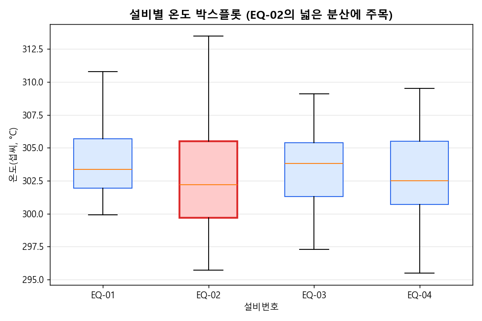

5차시 실습지
그래프로 공정 상태 이해하기 — 실습지
1. 그래프 종류 연결 문제
왼쪽 상황과 오른쪽 그래프 종류를 알맞게 연결해보자.
| 상황 | 그래프 후보 |
|---|---|
| ① 시간에 따른 온도 변화를 보고 싶다 | A. 히스토그램 B. 박스플롯 C. 산점도 D. 막대그래프 E. 선 그래프 |
| ② 설비별 측정 건수를 비교하고 싶다 | |
| ③ 온도 값이 어느 구간에 몰려 있는지 보고 싶다 | |
| ④ 온도와 두께의 관계를 보고 싶다 | |
| ⑤ 설비별 온도의 퍼짐(변동)을 비교하고 싶다 |
① E ② D ③ A ④ C ⑤ B
2. 코드 빈칸 문제
Python
import pandas as pd
import matplotlib.pyplot as plt
df = pd.read_csv("week05_process_visualization.csv")
df["측정시간"] = pd.____________(df["측정시간"]) # 문자열을 날짜 형식으로 변환
plt.____________(df["온도_섭씨"], bins=18) # 히스토그램 그리기
plt.title("온도 분포 히스토그램")
plt.show()
df.____________(column="온도_섭씨", by="설비번호") # 설비별 박스플롯 그리기
plt.show()순서대로
to_datetime, hist, boxplot3. 그래프 해석
아래는 5차시 강의에서 실제 데이터로 그린 박스플롯이다 (index.html의
"실행 결과 예시 — 박스플롯" 절과 동일한 이미지).

이 그래프를 보고 다음 질문에 답해보자.
- 네 설비 중 상자(box)와 수염이 가장 넓게 퍼져 있는 설비는 어디인가?
- 그 설비의 온도가 불안정하다면, 합격률에는 어떤 영향을 줄 것으로 예상하는가?
1) EQ-02. 다른 설비의 온도 표준편차가 약 2.9~3.2℃인 것에 비해 EQ-02는 약 4.29℃로 가장 크게 퍼져 있다.
2) 온도가 불안정할수록 정상범위(295~305℃)를 벗어날 가능성이 높아 불합격이 늘어날 것으로 예상된다. 실제로 EQ-02의 불합격 비율은 약 24.4%로, 다른 설비(약 3.6~6.7%)보다 훨씬 높다.
2) 온도가 불안정할수록 정상범위(295~305℃)를 벗어날 가능성이 높아 불합격이 늘어날 것으로 예상된다. 실제로 EQ-02의 불합격 비율은 약 24.4%로, 다른 설비(약 3.6~6.7%)보다 훨씬 높다.
4. 결과 해석 문제
실습에서 df["온도_섭씨"].corr(df["두께_nm"])를 계산했더니 결과가
0.82였다.
이 숫자를 보고 온도와 두께의 관계를 설명해보자.
상관계수가 1에 가까울수록 강한 양의 상관관계다. 0.82는 비교적 강한 양의
상관관계로, 온도가 높을수록 두께도 두꺼워지는 경향이 있다는 뜻이다. 다만 상관관계가
있다고 해서 온도가 두께의 "원인"이라고 단정할 수는 없다.
5. 분석 문장 작성 문제
아래 빈칸을 채워 이번 차시 데이터를 한 문장으로 요약해보자.
문장 작성
"설비 ____의 온도 표준편차는 약 ____℃로 가장 크며, 불합격 비율도 약 ____%로 다른
설비보다 높다. 온도와 두께 사이에는 상관계수 약 ____의 관계가 있다."
6. 도전 문제
도전
df.boxplot(column="진동_mm_s", by="설비번호")를 실행해 설비별 진동 값의
박스플롯을 직접 그려보자. 온도 박스플롯과 같은 설비가 가장 넓게 퍼져 있는지 확인하고,
그 이유를 한 문장으로 적어보자.